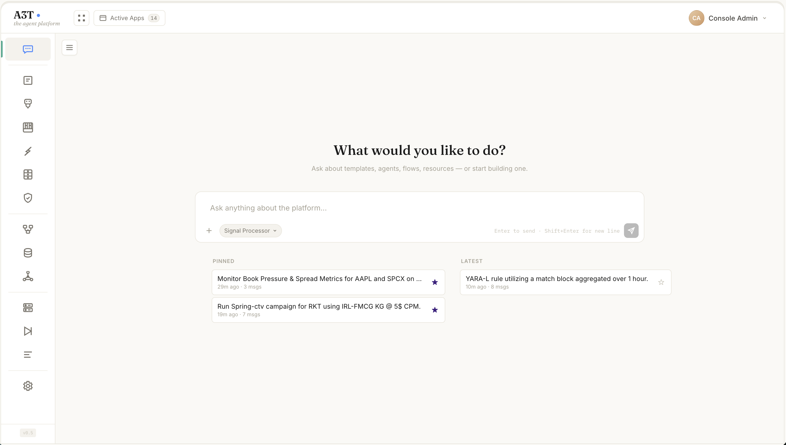
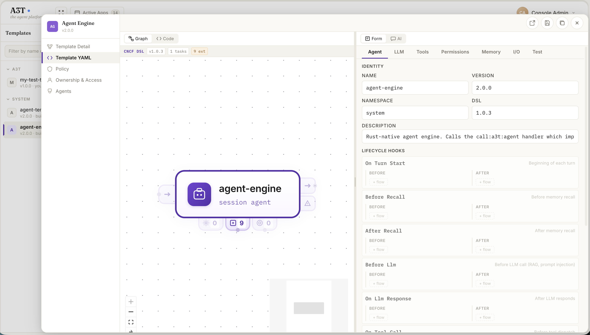
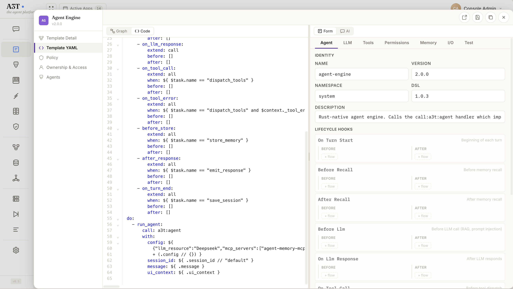
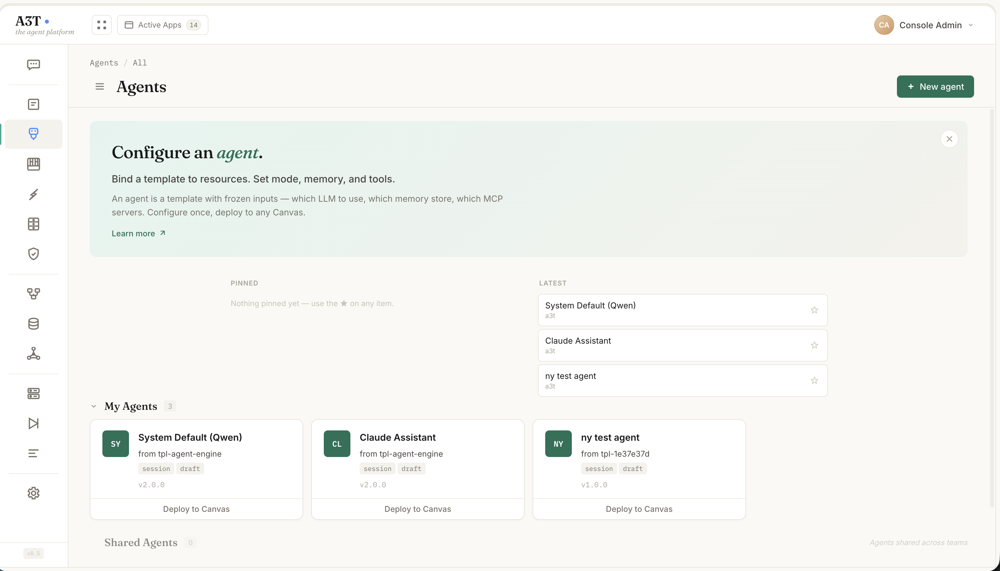
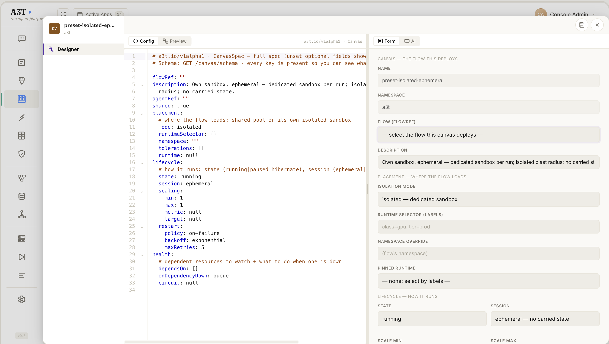
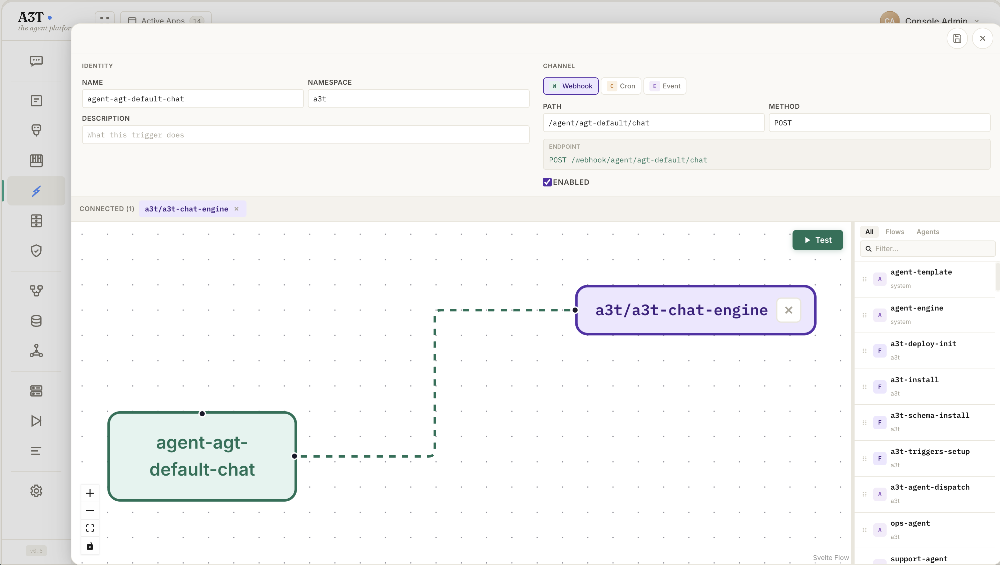
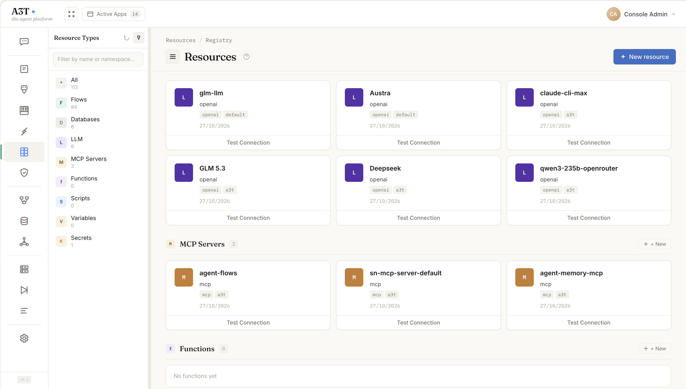
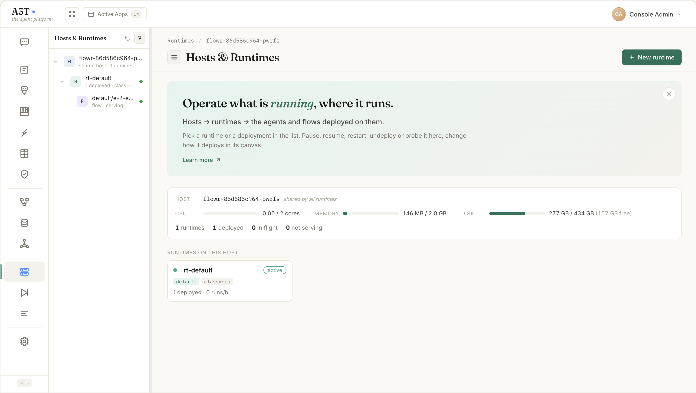
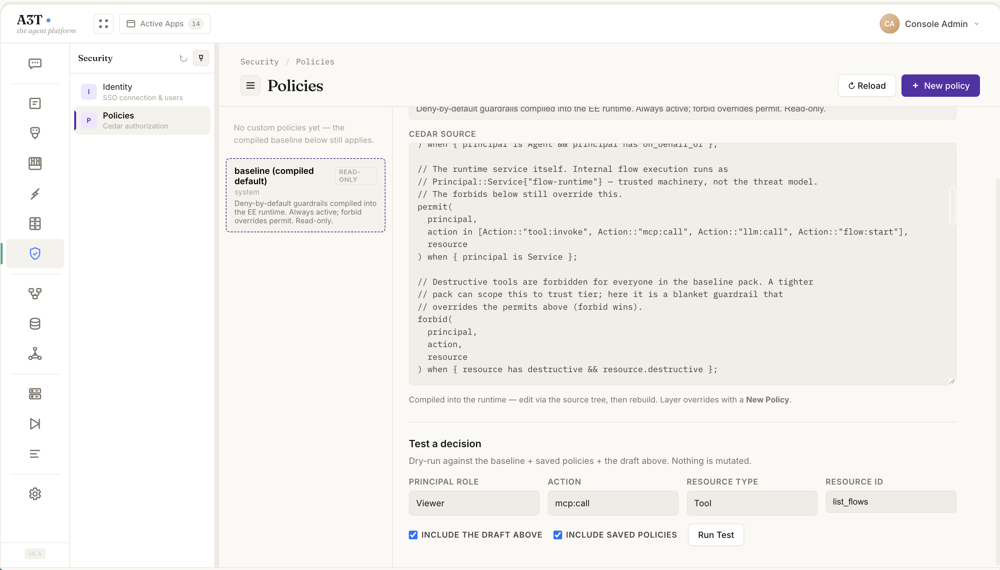

Build your SecOps, trading, bidding, monitoring or integration agent. Your CISO, chief compliance officer, CMO, COO or CTO will say yes.
The enterprise-ready platform for high-performance, mission-critical agents.
- Built-in agent modelReads your memory first
- Agents evolving workflowsKnown path, every time
- Enterprise memoryCases · procedures
- Governance on every actionAgent ID · delegation · policy gate

From question to running agent.
Ask the platform. Then build.
The console opens on a conversation. Pick a domain agent — SecOps, Trading, RTB Bidder — and work with it directly, governed by the same policy as everything else.
Templates are CNCF workflows.
Every agent starts as a Serverless Workflow template. Hook flows into lifecycle points — turn start, recall, LLM call, tool call, store, response, turn end — without forking the engine.

Canvas to code, round-trip.
Flip from Graph to Code and the YAML is the source of truth: diffable, reviewable, and ready for your existing Git workflow. Edit either side; the other follows.

An agent is a template with frozen inputs.
Which LLM to use, which memory store, which MCP servers. Bind a template to resources once, then deploy it to any canvas.

Decide where and how it runs.
A canvas sets placement (shared pool or isolated sandbox), lifecycle (running or hibernated), sessions (ephemeral or persistent), scaling, restart policy and dependency health — as a form or as YAML.

Route inputs to flows.
Webhooks, cron schedules and event listeners. Any trigger can fan out to multiple flows — pause, throttle or rewire without changing the flow itself.

Name your dependencies once.
LLMs, MCP servers, databases, functions, variables and secrets are namespaced resources. Test the connection, then reference them by name from any flow or agent.

Operate what is running, where it runs.
Hosts → runtimes → the agents and flows deployed on them. Pause, resume, restart, undeploy or probe — with capacity and health on one screen.

Every decision, on the record.
A compiled, deny-by-default Cedar baseline with your own policies layered on top. Dry-run a decision before you ship it; every allow and deny lands in the decision log.

Fifteen apps. One governed control plane.
Build, wire, run and audit from the same place — every app shares the same identity, the same policy engine, the same decision log and the same AgentLM.
Built for the whole organization.
Four perspectives. One governed execution model. Choose your role to see what A3T changes for your team.
Every action has an identity. Every decision has a reason.
Give agents enough access to do real work — without giving them a blank check. Policy follows the user, the agent, and the resource through the entire flow.
- Pluggable OIDC (Keycloak, Entra ID, Okta…) with verified claims
- Per-step Cedar decisions against concrete resources
- Originating identity preserved across nested flows
- Narrow-only capability delegation and deny-by-default
Your cluster. Your runtime. Your operating model.
Run agentic workloads with the same Kubernetes boundaries and operational practices your platform team already uses. Keep infrastructure connections reusable and explicit.
- Rust-based CNCF workflow runtime on Kubernetes
- Namespaced workflows, resources, and triggers
- Webhook, cron and event entry points
- MCP/JSON-RPC control with asynchronous execution polling
Design the memory, not just the pipeline.
Shape the enterprise memory your agents and AgentLM read: what is kept, how it connects, who can see it and how long it lasts.
- Model five memory types and the knowledge graph that links them
- Query everything with AQL: RECALL, STORE, LINK and FORGET
- Scope data per tenant, team and agent, checked by policy
- Set retention and history, with a forget that really deletes
Open standards. From canvas to code.
Build with workflow YAML, named resources, MCP tools, and AQL. Use the console when it helps and your existing development workflow when it doesn’t.
- CNCF Serverless Workflow definitions
- Typed tasks for agents, LLMs, tools, data, and people
- MCP clients for creating, executing, and inspecting flows
- AQL operations to store, recall, forget, and link memory
An agent model that reads
your enterprise memory.
AgentLM reads your enterprise memory directly: past cases, proven procedures and how your systems connect are part of how it thinks, not text pasted into a prompt. That is why it can solve most work itself, inside your tenant. Workflows give it a known path, and policy decides what it may do. Only what it can’t solve is routed to a frontier LLM, and only if policy allows.
- AttendAgentLM reads the relevant enterprise memory directly, as part of how it thinks.
- Solve or routeIt solves the request itself, or routes the hard case to a frontier LLM.
- GovernCedar policy checks every action it takes, routing included, for this agent and this user.
- AnswerIts answer is a typed workflow, checked against the schema before it runs.
- RunThe workflow runs checkpointed and audited.
- LearnVerified outcomes go back to memory, so AgentLM knows more next time.
01 AgentLMEarly access Built-in agent model Reads your memory first.
Before AgentLM does anything, it reads your enterprise memory: past cases, the procedures that worked and how your systems connect. With that context it does the everyday work itself, inside your environment. Only the genuinely hard cases go to a frontier LLM, so costs stay predictable and your data stays where it is.
- Lower, predictable model costs
- Your data stays in your environment
- Answers checked before they run
Show the technical detailsHide the technical details
AgentLM is A3T’s agent model. It runs on a single GPU inside your tenant, reads agent memory directly, and works inside your workflows and policies. Every request starts at a gate where AgentLM decides whether it can solve the request, how much thinking it needs, or whether to escalate to a frontier LLM. Its answer is a workflow that has been checked before it runs.
How it works
- Solve-or-escalate gate. The model’s first layers estimate whether it can solve the request, which skills it needs and how much to think. If agent memory has no matching procedure, evidence or concept, it escalates regardless. A request it keeps costs nothing extra; one it escalates costs a fraction of one pass.
- Reads memory directly. Knowledge-graph nodes are precomputed into attention blocks stored in agent memory. AgentLM attends to them instead of pasting text into a prompt.
- Fixed-size sessions. A session is a fixed-size state plus a short window of recent text, saved to memory after every turn and restored on the next. Each turn processes only its new tokens.
- Answers are workflows. Output is constrained to the CNCF Serverless Workflow schema and dry-run in A3T before it is returned.
- Learns from outcomes. Verified outcomes and workflow changes are written back to memory. A background job consolidates episodes into knowledge for the next request.
- Skills without retraining. Domain and tenant skills are small adapters stored in memory and paged onto the GPU when the gate asks for them. A new domain means training one adapter, not a new model.
Who it helps
Early access covers the core model, memory attention and the solve-or-escalate gate. Skill adapters and trained thinking budgets are on the roadmap.
02 Workflows Agents that become workflows Known path, every time.
A3T runs the known path as code, the same way on every run, and picks up where it left off if something fails. Only the exceptions go to a model: AgentLM first, a frontier LLM only if AgentLM escalates. Each approved fix becomes the next workflow version, so your LLM bill shrinks and every change in behaviour is a reviewed diff.
- Reliable, repeatable runs
- Survives failures and restarts
- Each fix becomes the next version
Show the technical detailsHide the technical details
Workflows are written in the open CNCF Serverless Workflow spec and run on a Rust runtime with microsecond dispatch. Inputs are typed, every step is checkpointed, and the execution path is monitored. Only deviations from it go to a model: AgentLM first, a frontier LLM only if AgentLM escalates.
How it works
- Typed inputs. Every workflow declares its input schema, so bad input is caught at the edge instead of halfway through a run.
- 26 task types. Agent, model, MCP tool, human approval, switch, loop, transform, emit and more. Routine steps never spend a token.
- Triggers and sandboxes. Start flows from webhooks, schedules and events, and run tasks in isolated or shared sandboxes.
- Checkpoint and resume. State is saved after every task. A failed or restarted run resumes at the failed step without repeating side effects.
- Monitored execution. Each run is compared with the expected path and recorded as an execution graph in agent memory. That graph is what AgentLM reads to handle a deviation and propose a change.
- Versioned changes. A proposed change becomes a new workflow version once it is approved. The same YAML is on the canvas and in Git.
Who it helps
Example
document: dsl: '1.0.0' namespace: secops name: contain-host input: schema: alert.v2 do: - triage: call: a3t:agent with: message: ${ .alert }
03 Memory Enterprise memory Cases, procedures and how they connect.
Your agents keep what they learn: past cases, the procedures that worked, and how people, systems and incidents connect. AgentLM reads it directly, so agents recall instead of asking a model again, and you decide what is kept and what is forgotten.
- No starting from scratch
- Fewer model calls
- Retention you control
Show the technical detailsHide the technical details
Agent memory is one store for everything an agent knows: five memory types, a knowledge graph, and the sessions and attention blocks AgentLM reads directly. It is queried with AQL, the Agent Query Language, and every recall and write is checked against policy.
How it works
- Five memory types. Working, episodic, semantic, procedural and tool memory. Proven procedures are reused, so agents stop asking a model for what they already know.
- AQL. RECALL, STORE, LINK and FORGET. Queries read like what the agent wants to know.
- Knowledge graph. LINK connects memories into a graph agents can traverse, not just a pile of vectors.
- Model memory. AgentLM’s sessions and attention blocks live here too. On a model upgrade they are recomputed from the source data.
- Scopes and sharing. Namespaces keep agents and tenants apart; shared scopes let a team’s agents learn from each other.
- Retention and a real forget. TTLs, history when facts change, and FORGET that actually removes data.
Who it helps
Example
RECALL FROM EPISODIC WHERE host = "lt-4471" FOLLOW LINKS TYPE "resolved_by" INTO PROCEDURAL RETURN pattern, confidence
04 Governance Governance on every action Identity, delegation and a policy gate for any agent.
Any agent, built on A3T, LangChain, Strands or anything that speaks MCP, gets its own identity from your identity provider and works only with access a person has delegated to it. Every tool call goes through the A3T policy gateway, which checks it against your rules, uses credentials the agent never sees, and logs who did what, for whom and why. When someone’s access changes, their running agents pause or stop.
- An identity for every agent
- Access delegated, never borrowed
- No credentials in agent code
Show the technical detailsHide the technical details
The A3T policy gateway sits between any agent and the tools it uses. It plugs into your identity provider (Keycloak, Entra, Okta, Auth0, Google or any OIDC), verifies the agent’s own identity and the user’s delegation on every call, decides with Cedar, and attaches the downstream credential itself. Agents need no auth code.
How it works
- An identity for every agent. Each agent gets a stable ID with a human owner and a class that policy can target, plus a short-lived workload token at start. It can be mirrored to your IdP, such as Entra Agent ID.
- Delegated, not borrowed. The user signs in through your IdP and delegates a scope, a set of tools and an expiry. Token exchange carries the user as subject and the agent as actor (RFC 8693, Entra on-behalf-of, ID-JAG).
- One gate for every tool call. Agents call tools through A3T’s MCP gateway. It verifies both identities, loads the user’s live roles, decides with Cedar, then acts. Agents only see the tools they may use, and risky calls can wait for a human approval.
- Agents never hold credentials. The gateway keeps the downstream tokens and uses the user’s own delegated token wherever the app supports it, so the app’s permissions still apply. Nothing is written into the agent, its logs or traces.
- Access changes reach running agents. A role change pauses affected runs at the next checkpoint. A leaver’s runs are stopped, their delegations revoked and their tokens deleted.
- Audit you can prove. Every decision is logged with agent, user, delegation, tool and the policies that decided it, and exported over OpenTelemetry to your SIEM. Policy diffs and shadow mode show what a change would allow or deny before it ships.
Who it helps
Example
permit ( principal in AgentClass::"itsm-assistant", action == Action::"servicenow__create_change", resource ) when { context.on_behalf_of in Role::"change-requester" && context.now < context.delegation.expires_at };
Start open. Turn on enterprise when you need it.
Community Edition runs open — anyone who signs in can edit. Enterprise adds roles, Cedar policy, SSO and audit, configured from one settings page.
Free, self-hosted, embedded storage. Every template, agent and flow feature.
Authentication, authorization, policy engine, audit log, monitoring and compliance.
Give every team its agents. Give your CISO, compliance officer, CMO, COO or CTO a reason to say yes.
Explore the workflow model, inspect the architecture, or open the A3T console to start building.